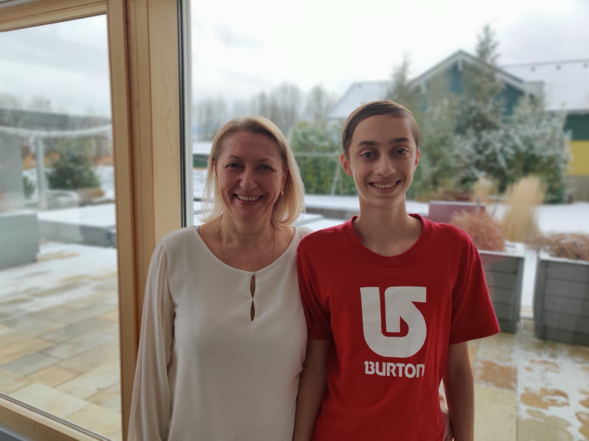

Benjamin Gruber
Ich bin ein 15 Jahre alter Schüler der IT-HTL Ybbs. Meine Hobbys sind Programmieren und Physik und ich habe bereits einige Erfahrung in den Gebieten Game- und Web-Development.
Erfahre Mehr